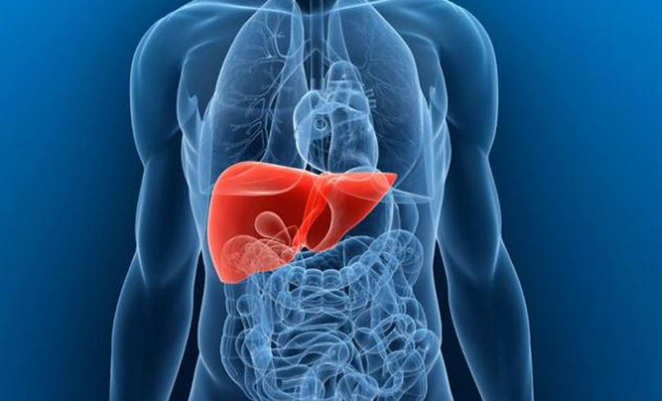
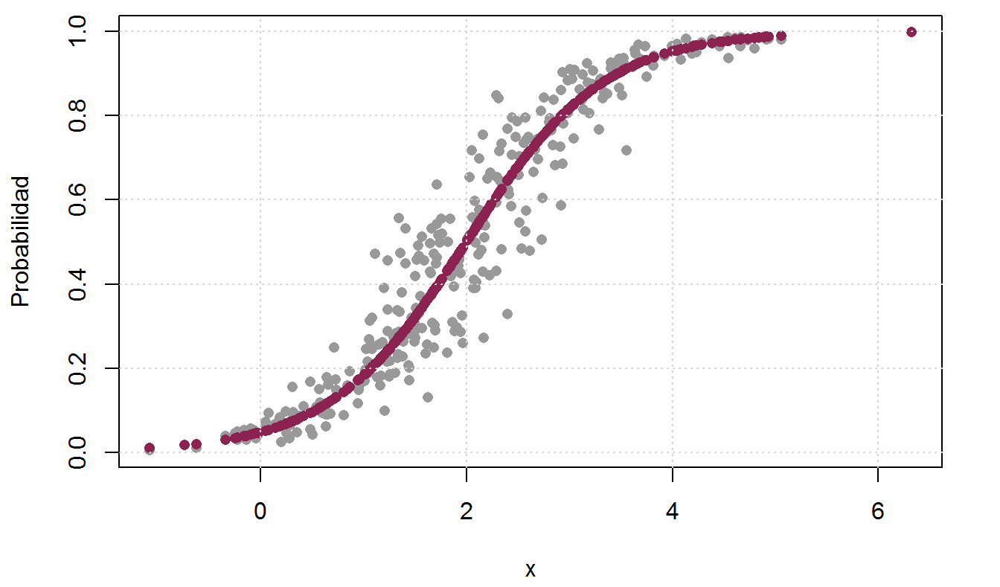

Git Hub
Linked In
MÉTODOS DE MACHINE LEARNING
A continuación se presentan algunos métodos de machine learning
Predicción precios de viviendas
Ver más
Predicción cardiológica
Ver más

Predicción pacientes con/sin hígado
Ver más
Proyecto 4
Ver más

Proyecto 5
Ver más
Proyecto 6
Ver más
Menu
Inicio
Introducción a Machine Learning
Marco teórico
Aprendizaje Supervisado
De regresión
De clasificación
Aprendizaje no supervisados
De Clustering
De reducción de dimensiones
Proyectos Analizados
Predicción precios de viviendas
Predicción cardiológica
Predicción pacientes con/sin hígado
Predicción altura a partir de restos óseos
Predicción de autismo en adultos
Nombre 6
TA's del curso